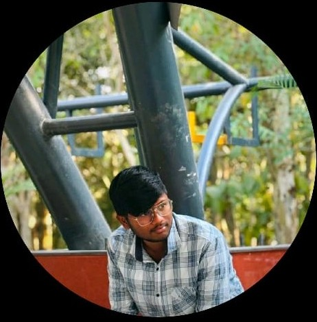

Maraganikuntla Shaik Mohammed Numan
B.Tech CSE (AI & ML) | Bangalore, India
Download My Resume (PDF)
Career Objective
Motivated and detail-oriented B.Tech Computer Science and Engineering (AI & ML) student with strong fundamentals in programming, data analysis, and web technologies. Seeking an internship to gain practical experience, enhance technical skills, and contribute to innovative, real-world projects.
Education
Alliance University – B.Tech CSE (AI & ML), Expected 2026, GPA: 7.4/10Sri Chaitanya Junior College – IntermediateVignan e.m School – SSC
Technical Skills
Languages: Python, C++, MATLAB
Web: HTML, CSS (Tailwind)
Tools: Power BI, Excel, Unreal Engine
Core: Data Visualization, ML, Web Design
Projects
Water Forecasting Dashboard – Python + Power BI | Smart India HackathonAR Furniture Shopping Website – HTML, Tailwind CSS, JavaScriptPortfolio Website – Responsive design showcasing skills and projectsData Visualization Dashboard – Power BI + Excel
Certifications
Introduction to Data Analytics – Coursera
Machine Learning – NPTEL
Interests
Artificial Intelligence, Data Analytics, Web Development, Game Design, Sustainable Tech
© 2025 Numan. All rights reserved.